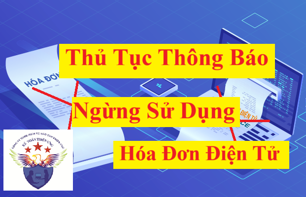

Trình tự thực hiện ngừng sử dụng hóa đơn điện tử đang được quy định tại Khoản 12 Điều 1 Nghị định 70/2025/NĐ-CP Sửa đổi, bổ sung khoản 2, điều 16 của Nghị định 123/2020/NĐ-CP như sau:
Theo đó thì Trình tự thực hiện ngừng sử dụng hóa đơn điện tử như sau:
a) Cổng thông tin điện tử của Tổng cục Thuế ngừng tiếp nhận hóa đơn điện tử và không gửi thông báo ngừng sử dụng hóa đơn điện tử đối với người nộp thuế thuộc trường hợp quy định tại điểm a, điểm b, điểm d và hộ kinh doanh, cá nhân kinh doanh chuyển đổi phương pháp tính thuế tại điểm c khoản 1 Điều này kể từ ngày tổ chức, cá nhân chấm dứt hiệu lực mã số thuế hoặc kể từ ngày cơ quan thuế ban hành thông báo người nộp thuế không hoạt động tại địa chỉ đã đăng ký hoặc quyết định cưỡng chế nợ thuế.
b) Cổng thông tin điện tử của Tổng cục Thuế gửi thông báo điện tử về việc ngừng sử dụng hóa đơn điện tử, ngừng sử dụng hóa đơn điện tử khởi tạo từ máy tính tiền (theo Mẫu số 01/TB-NSD Phụ lục IB ban hành kèm theo Nghị định này) và ngừng tiếp nhận hóa đơn điện tử, ngừng tiếp nhận hóa đơn điện tử khởi tạo từ máy tính tiền đối với người nộp thuế này thuộc trường hợp quy định tại điểm c, điểm h khoản 1 Điều này khi nhận được thông báo của cơ quan nhà nước có thẩm quyền về việc tạm ngừng kinh doanh hoặc văn bản của người nộp thuế về việc tạm ngừng kinh doanh hoặc tạm ngừng sử dụng hóa đơn.
c) Thủ trưởng cơ quan thuế quản lý trực tiếp ban hành thông báo điện tử về việc ngừng sử dụng hóa đơn điện tử đến người nộp thuế thuộc trường hợp quy định tại điểm e, điểm i khoản 1 Điều này (theo Mẫu số 01/TB-NSD Phụ lục IB ban hành kèm theo Nghị định này) kể từ ngày cơ quan thuế nhận được thông báo của cơ quan có thẩm quyền.
d) Thủ trưởng cơ quan thuế quản lý trực tiếp gửi thông báo điện tử đến người nộp thuế thuộc trường hợp quy định tại điểm đ, điểm g khoản 1 Điều này trong thời gian 01 ngày làm việc sau khi nhận được thông báo của cơ quan có thẩm quyền gửi cơ quan thuế hoặc ngay sau khi xác định người nộp thuế thuộc diện rủi ro rất cao theo quy định tại điểm k khoản 1 Điều này để yêu cầu người nộp thuế giải trình hoặc bổ sung thông tin, tài liệu liên quan đến việc sử dụng hóa đơn điện tử.
d.1) Người nộp thuế giải trình hoặc bổ sung thông tin, tài liệu không quá 02 ngày làm việc kể từ ngày cơ quan thuế gửi thông báo điện tử. Người nộp thuế có thể đến cơ quan thuế giải trình trực tiếp hoặc bổ sung thông tin, tài liệu hoặc bằng văn bản.
d.2) Người nộp thuế tiếp tục sử dụng hóa đơn điện tử hoặc giải trình bổ sung, cụ thể:
d.2.1) Trường hợp người nộp thuế đã giải trình hoặc bổ sung thông tin, tài liệu đầy đủ và chứng minh được việc sử dụng hóa đơn điện tử theo đúng quy định pháp luật thì người nộp thuế tiếp tục sử dụng hóa đơn điện tử.

d.2.2) Trường hợp người nộp thuế đã giải trình hoặc bổ sung thông tin, tài liệu mà không chứng minh được việc sử dụng hóa đơn điện tử theo đúng quy định pháp luật thì ngay trong ngày làm việc, cơ quan thuế tiếp tục gửi thông báo lần 2 yêu cầu người nộp thuế bổ sung thông tin, tài liệu. Người nộp thuế thực hiện giải trình hoặc bổ sung thông tin, tài liệu không quá 02 ngày làm việc kể từ ngày cơ quan thuế gửi thông báo điện tử lần 2.
d.3) Hết thời hạn theo thông báo mà người nộp thuế không giải trình, bổ sung thông tin, tài liệu thì cơ quan thuế ban hành thông báo ngừng sử dụng hóa đơn điện tử có mã của cơ quan thuế hoặc ngừng sử dụng hóa đơn điện tử không có mã của cơ quan thuế theo Mẫu số 01/TB-NSD Phụ lục IB ban hành kèm theo Nghị định này và xử lý theo quy định.